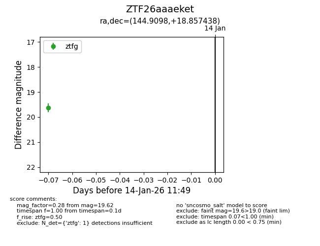
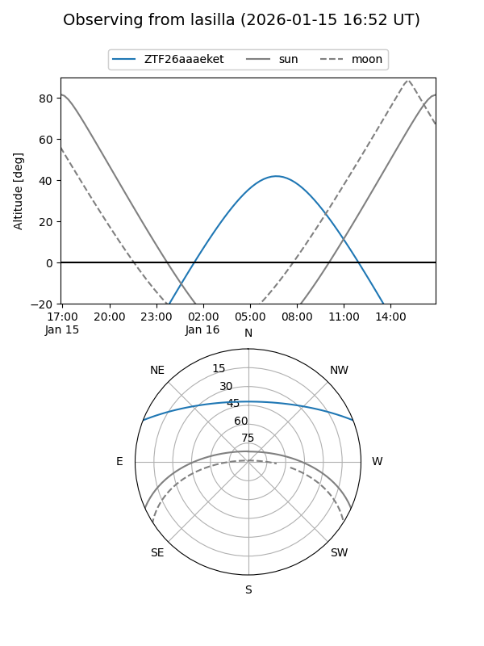
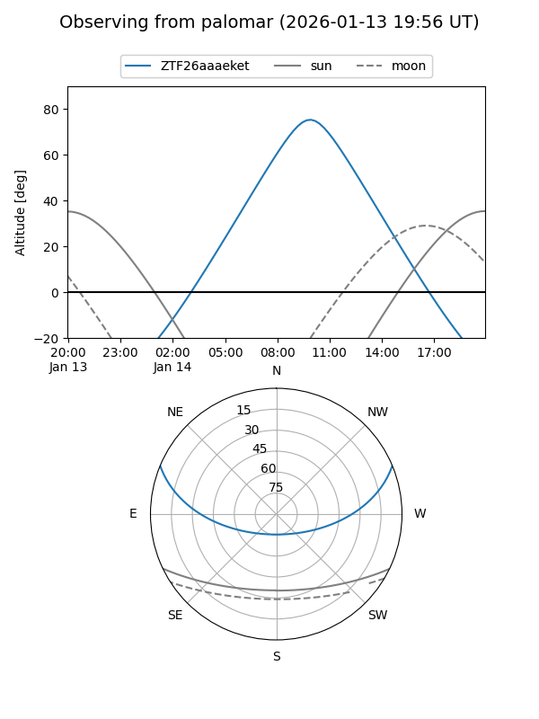

ZTF26aaaeket
Target ZTF26aaaeket at 2026-01-16 11:55
Aliases and brokers:
FINK: link
Lasair: link
ALeRCE: link
alt names
ZTF26aaaeket (ztf,fink_ztf)
Coordinates:
equatorial (ra, dec) = 144.9098,+18.85744
equatorial (HMS+DMS) = 09:39:38.34,+18:51:26.78
galactic (l, b) = (213.0428,+45.35577)
Flags:
Photometry:
last ztfg=19.62
1 ztfg detections
Lightcurve

Visibility


Additional plots